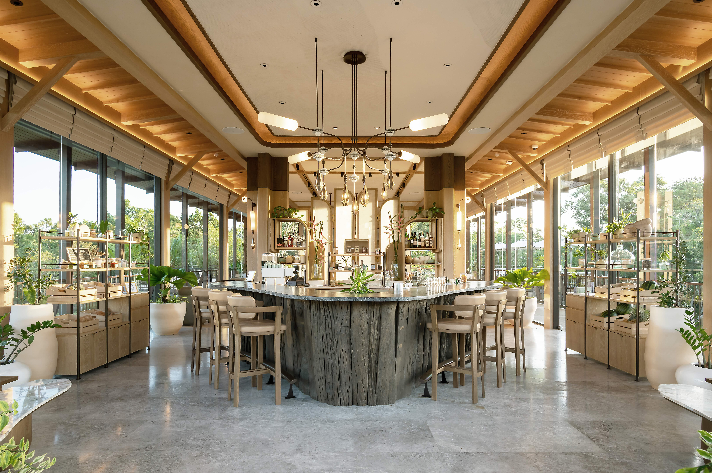

Residence · Legacy · Continuity
The Life You
Intended
to Build

Above: Thep Krasatti, Phuket. At 232 acres of regenerative landscape, the question shifts from what a place offers to what it quietly enables.
Somewhere between the fortieth flight of the year and the third school district in five years, a quiet question takes root. Not a crisis. Just a gap between the life that was planned and the one that is actually being lived.
Every year the shortlist gets more refined. The addresses are better. The architecture is more considered. And yet the search continues — because what is being looked for cannot be found on a property listing.
The misunderstanding is categorical. This is not a problem of finding the right property. It is a problem of designing the right infrastructure — the environment within which health, family continuity, and daily coherence are organised as a whole rather than continuously managed as separate problems.

Above: The search that continues past the point when it should have ended.
Fragmented time. McKinsey research on senior executive time-use found that fewer than 30% of hours are spent on what executives identify as their highest priorities. For those who define highest priority as family, that figure is unforgiving.
Disconnected family. Each individual decision — school, city, business base — is locally rational. The aggregate is a family systematically separated, held together by intention and logistics, slowly losing the thread of shared daily life that turns a family into a culture.
Reactive health. Most people at this level manage health the way they manage crises — responding when something signals concern. That is not a health system. It is health management in the absence of infrastructure, dressed in premium appointments.
The WHO now classifies loneliness as a global public health priority — estimating that social isolation carries a mortality risk equivalent to smoking 15 cigarettes a day. Among wealthy individuals, the Luxury Institute describes loneliness as "one of the best-kept secrets" of ultra-wealthy life: a life rich in contact, thin in the relationships that develop through repetition and ordinariness.

Above: 232 acres. The land as the first structural argument.
Fragmentation does not produce a crisis. It produces a drift — quiet, accumulative, and very difficult to reverse once the pattern is embedded.
The cost shows up in distance: the grandparent who is loved but not known, the adult children with their own geographies, the gathering that keeps being moved to next year. The 75-year Harvard Study of Adult Development found that the quality of close relationships is the single strongest predictor of long-term health and happiness — more reliable than wealth, social standing, or intelligence.4
"The families that hold together across generations share one characteristic above all others: they have a place that holds them."
Sand Hill Global Advisors · Beyond Wealth: The Top 7 Priorities of UHNW Families, 2025

Above: Continuity not as an occasion, but as an ordinary afternoon.
A property performs a function within a life structure that already exists. It does not change the structure. A life system is different in kind — the infrastructure within which health, family continuity, and daily coherence are organised as a whole, not pursued separately through separate resources.
Knight Frank's Wealth Report 2024 documented this shift: UHNW buyers in the 40–60 bracket are moving away from address-as-status toward what the report calls "environment-as-infrastructure" — places that actively reduce the cost of living well, rather than simply reflecting that it has been achieved.9
This is, in most cases, the last residential decision that needs to be made. Not because the search ends — because the question finally has a real answer.
Tri Vananda, in Phuket's Thep Krasatti district, is a designed life system for multigenerational families — four integrated components, each addressing a constraint most premium environments leave unresolved.

Above: Every element — the materials, the light, the scale — designed in service of the life the whole system exists to support.
The change is not dramatic on arrival. It is structural over time. Health becomes consistent because the environment sustains it. Family density changes without anyone managing it — the grandparent who was present four times a year becomes a regular presence. The encounters that form character happen because the place makes them structurally inevitable.
Across the second generation, the shared place becomes the shared reference — the story a family tells about who it is. The transmission of values that Citco identified as the single most pressing non-investment concern for family offices globally happens here, in the kitchen, on the lake path, in a conversation that started because two people happened to walk the same route at the same time.8
Research in Developmental Cognitive Neuroscience (2024) found that grandparent-grandchild proximity generates distinct neurological coupling — with measurable effects on development that equivalent parent-child interaction does not replicate. The effect is most pronounced when all three generations are present in the same daily environment.6
Wealth advisors say that the residential question is almost never engaged with at this level of seriousness in the initial decision. It becomes clear later — when the children are adults with their own geographies, when the gathering that used to happen naturally no longer does.
The decision, framed correctly, is not whether a place is beautiful or financially sound. It is whether it resolves the structural constraints that have accumulated: fragmented time, disconnected family, reactive health, and a life without a coherent centre. For the right family, at the right stage, this is not a luxury decision. It is a rational answer to a set of problems that no further acquisition will resolve.
What was being searched for was never a better property. It was a place worth building a life around — one that earns its way into the centre of a family's sense of itself, slowly, across the seasons and years of simply being there.
Available to visit privately for those considering what a structural change of this kind might look like. Visits are unhurried, without agenda, and designed around the family — not the property.
Thep Krasatti, Thalang District
232 acres · 15 min from Phuket International
[email protected]
+66 95-371-9494
1 Luxury Institute, Evolving Values and Priorities of Ultra-High-Net-Worth Families, 2022.
2 Altrata / Wealth-X, intergenerational transfer projections, 2025. Global figure: $124tn, 2024–2048.
3 Julius Baer, Family Barometer 2024. Intergenerational continuity cited as defining concern globally.
4 Waldinger, R. & Schulz, M., The Good Life, 2023. Harvard Study of Adult Development, begun 1938.
5 Jones, K., Health & Social Care in the Community, 2025. 62 studies, 16 countries, 289,071 participants.
6 Dikker, S. et al., Developmental Cognitive Neuroscience, 2024. Grandparent-grandchild inter-brain coupling.
7 Campbell Collaboration, Campbell Systematic Reviews, 2023 & 2024. 500+ intergenerational trials.
8 Citco, 10 Key Challenges for Family Offices in 2024. Values transfer cited as primary non-investment concern.
9 Knight Frank, The Wealth Report 2024. Environment-as-infrastructure shift.
10 Sand Hill Global Advisors, Beyond Wealth: The Top 7 Priorities of UHNW Families, 2025.
11 McKinsey & Company, Making Time Management the Organisation's Priority.
12 World Health Organisation, Social Isolation and Loneliness, 2023.
13 Altrata, World Ultra Wealth Report 2025. UHNW projections by region to 2030.
14 Gonçalves et al., Int. J. Environmental Research and Public Health, 2023. Biophilic design outcomes.